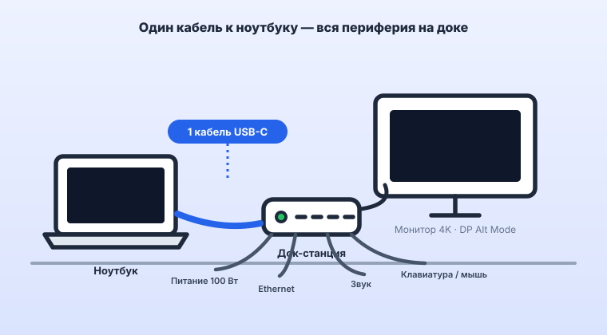

Концепция «Clean Desk» в 2026 году стала стандартом для продуктивной работы: вы приходите за рабочий стол, подключаете к ноутбуку ровно один кабель USB Type-C, и машина мгновенно получает питание, выводит картинку высокой четкости на большой монитор, соединяется с гигабитной сетью, внешней акустикой и всей периферией. Однако реализация этой магии на практике часто упирается в путаницу со стандартами интерфейсов, нехватку питания и мерцание монитора.
1. Анатомия одного кабеля: что должно сойтись?
Разъем Type-C — это всего лишь форма штекера. Чтобы всё заработало по одному проводу, порт ноутбука и сама док-станция обязаны поддерживать три ключевые технологии:
- DisplayPort Alt Mode (DP 1.4 / DSC): Передача видеосигнала напрямую с видеоядра ноутбука в обход процессора. Без аппаратного Alt Mode видео через обычный USB-порт пойдет только через программные костыли (DisplayLink) с задержками и артефактами.
- USB Power Delivery (PD 3.0 / PD 3.1): Сквозная подача питания мощностью от 65 до 100 Вт. Для современных производительных ноутбуков с экранами 15–16 дюймов (на чипах AMD Ryzen 7/9 или Intel Core Ultra) 65 Вт часто недостаточно — под тяжелой нагрузкой батарея начнет медленно разряжаться прямо от сети. Необходим блок питания на 100 Вт с запасом под собственные нужды хаба.
- USB 3.2 Gen 2 (10 Гбит/с): Полоса пропускания, которой хватит одновременно для высокоскоростных внешних SSD, веб-камеры высокой четкости и гигабитного Ethernet без задержек в мыши и клавиатуре.
2. Док-станция: классический хаб против настольного комбайна
На рынке доминируют два формата устройств, каждый из которых решает свои задачи:
| Тип устройства | Компактные хабы (на проводке) | Полноценные настольные док-станции |
|---|---|---|
| Питание (PD) | До 65–85 Вт (часть забирает сам хаб) | Честные 85–100 Вт на ноутбук + питание периферии |
| Видеовыходы | Один HDMI 4K@30Hz / 4K@60Hz (с ограничениями) | Два или три монитора 4K@60Hz через DP и HDMI |
| Порты и слоты | USB-A, кардридер, базовый Ethernet | Множество USB-A/C, аудиоразъемы, оптический звук, RJ45 |
| Нагрев и стабильность | Сильно греются под нагрузкой, возможны сбросы сети | Массивные металлические корпуса с пассивным охлаждением |
Если вам нужен именно компактный хаб под один монитор и периферию, отправной точкой стоит взять UGREEN 100W PD: честная сквозная зарядка до 100 Вт, HDMI 4K, гигабитный Ethernet и порты USB 3.2 в металлическом корпусе — разумный баланс цены и стабильности.
Оригинальные хабы UGREEN с гарантией: сравните цену на Яндекс Маркете и в официальном магазине на AliExpress, где регулярно бывают купоны на серию Power Delivery.
Реклама. ООО «Яндекс Маркет», ИНН 9704254424, erid: 5jtCeReNx12oak2pVaJ4tLN
Реклама. ООО "АЛИБАБА.КОМ (РУ)", ИНН 7703380158, erid: 2bL9aMPo2e49hMef4pdzo6JkYp
3. Типичные проблемы и как их избежать
Даже при покупке дорогого оборудования пользователи часто сталкиваются с неприятными нюансами:
- Мерцание или пропадание картинки на мониторе: В 90% случаев проблема кроется в комплектном кабеле. Обычные кабели для зарядки телефонов не имеют высокоскоростных линий передачи данных DisplayPort. Используйте только сертифицированные кабели с поддержкой Thunderbolt 3/4 или Full Featured USB4 с маркировкой 100W/240W.
- Отвал USB-устройств при подключении флешек: Если к хабу подключен внешний SSD, клавиатура, мышь и флешка, док-станции может не хватить питания по линии 5V. Решение — использовать док-станции с собственным мощным блоком питания в розетку.
4. Итоговый вердикт: собираем рабочее место

Шаг 1. Проверьте порт ноутбука:
Убедитесь, что рядом с разъемом Type-C на вашем ноутбуке нарисован значок молнии (Thunderbolt), логотип DisplayPort или значок аккумулятора с вилкой.
Шаг 2. Выберите док-станцию с запасом по мощности:
Для ультрабуков достаточно моделей на 65–85 Вт. Для игровых и рабочих машин с дискретной графикой ищите вертикальные станции с блоком питания на 100–130 Вт.
Шаг 3. Избавьтесь от проводов:
Зафиксируйте док-станцию на столе, подключите к ней монитор, проводной интернет и ресивер клавиатуры — теперь для начала работы вам нужен ровно один штекер.